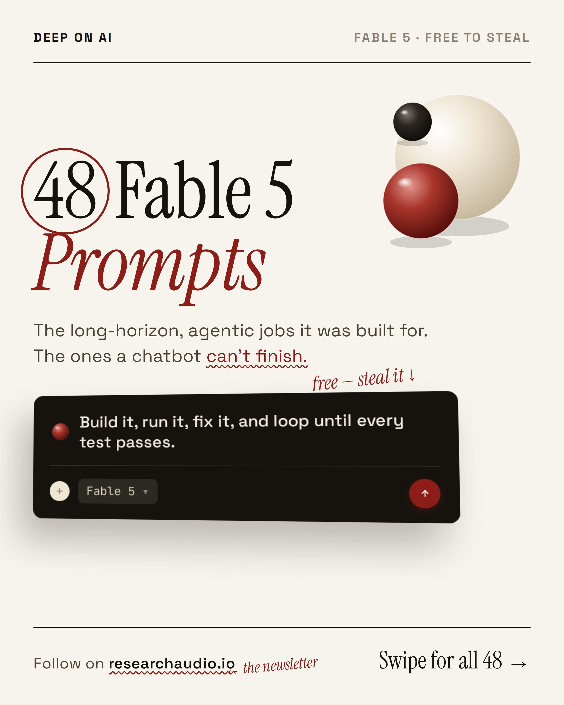
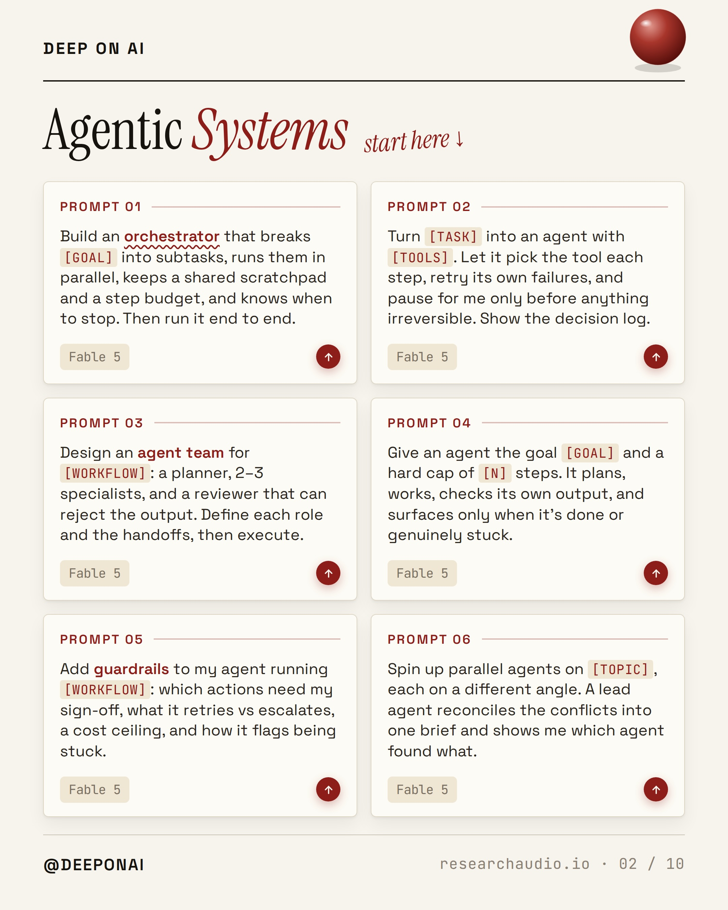
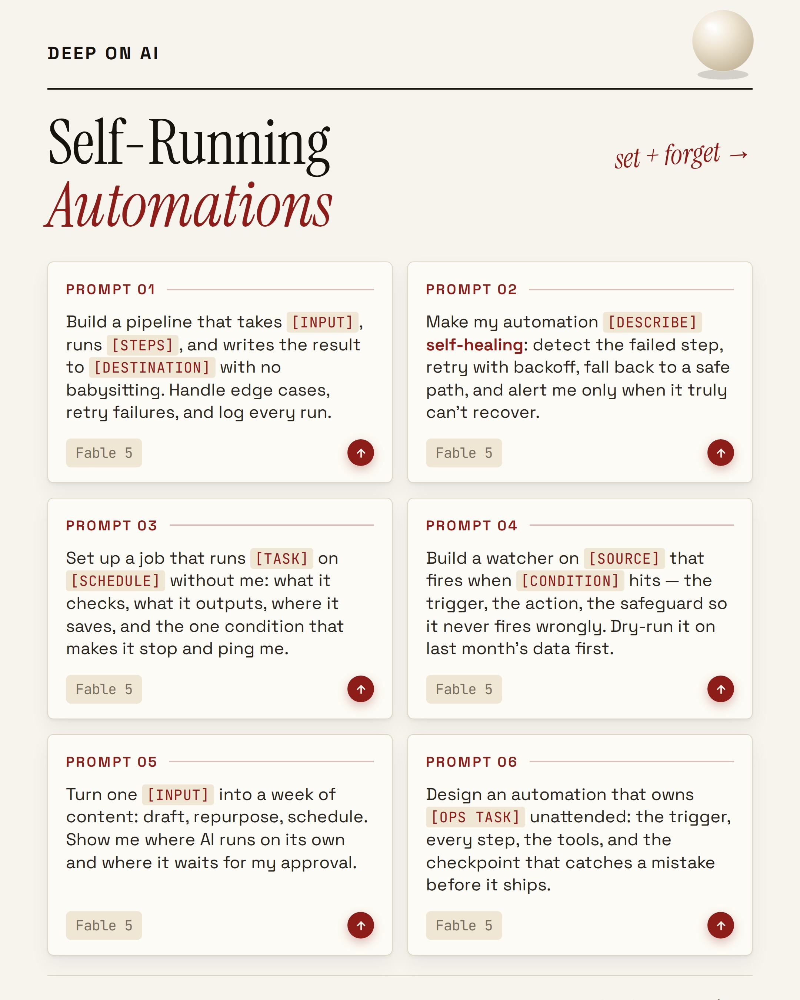
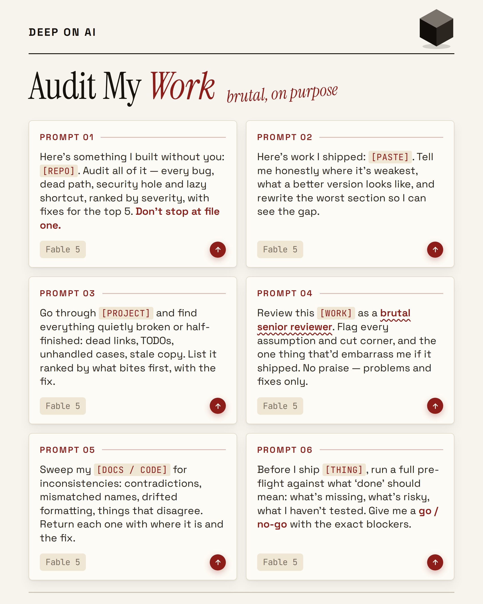
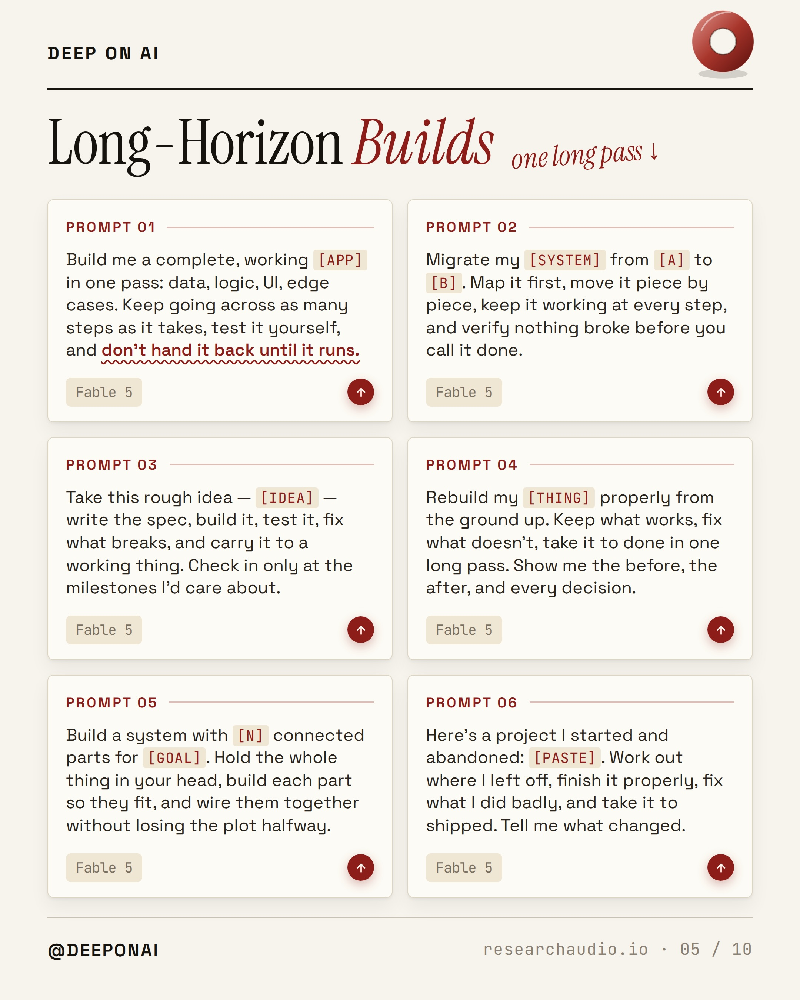
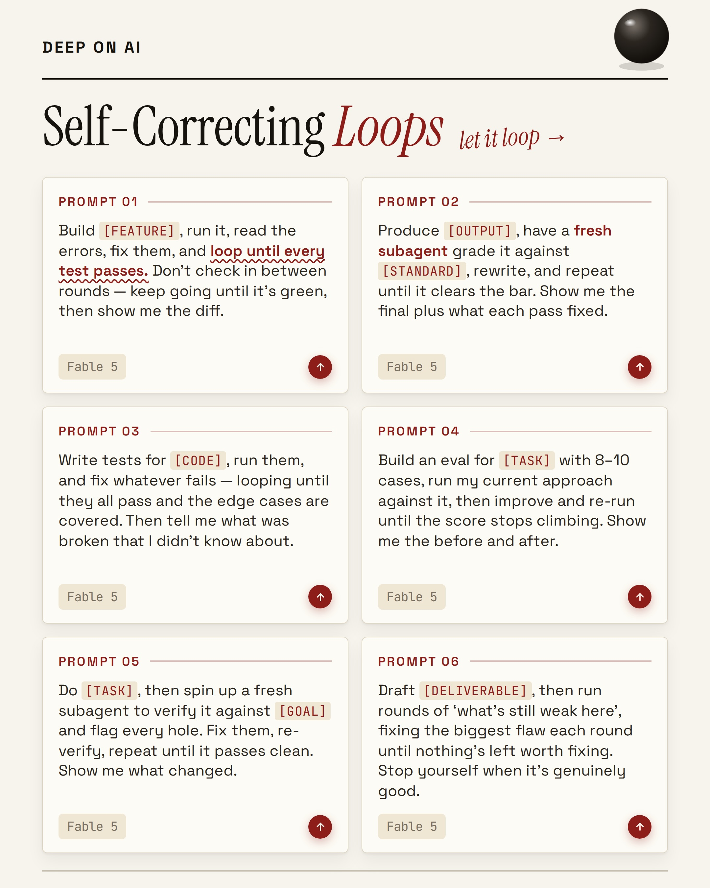
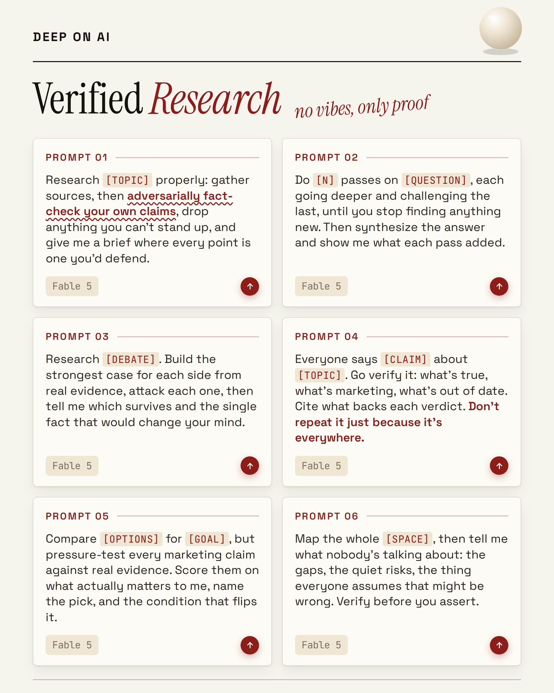
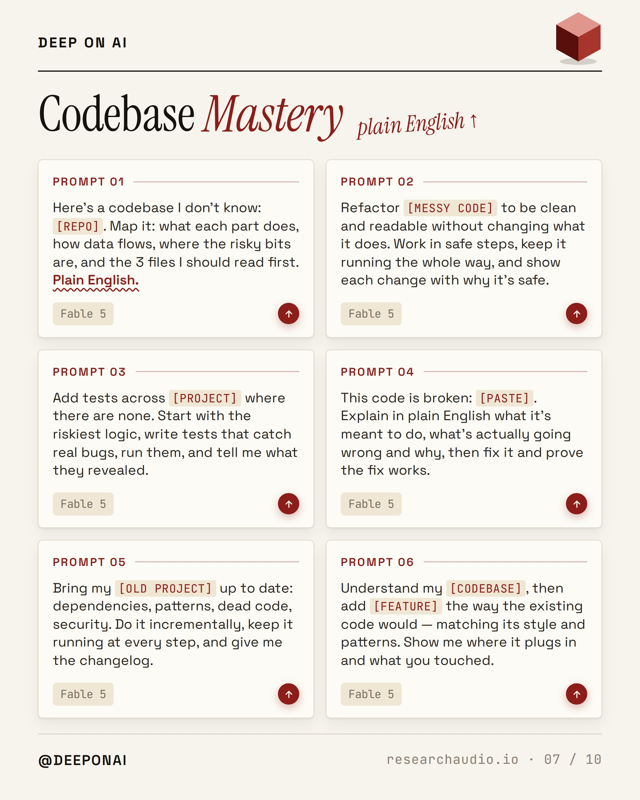
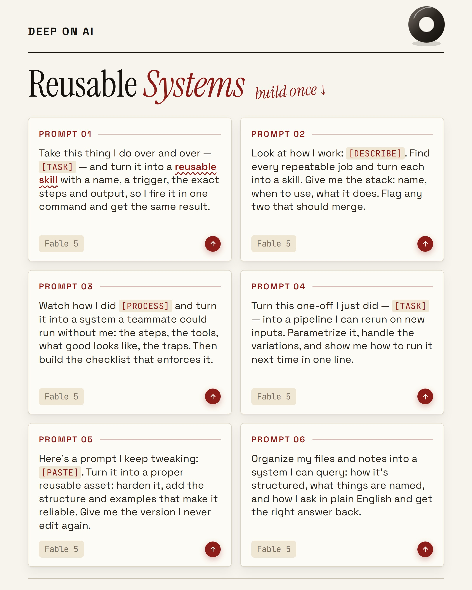

Instagram Post

48 prompts that turn Claude into a team that...
carousel (10 slides) (enriched by ClaudeClaw)
Summary
DEEP ON AI FABLE 5 • FREE TO STEAL 48 Fable 5 Prompts The... | DEEP ON AI Agentic Systems start here ↓ PROMPT 01 Build a... | DEEP ON AI Self-Running Automations set + forget → PROMPT... | DEEP ON AI Audit My Work brutal, on purpose PROMPT 01 Her... | DEEP ON AI Long-Horizon Builds one long pass ↓ PROMPT 01 ... | DEEP ON AI Self-Correcting Loops let it loop → PROMPT 01 ... | DEEP ON AI Verified...
Caption
48 prompts that turn Claude into a team that ships while you sleep. 👇
Most people still use it like a chatbot. One question, one answer, done.
The real unlock is the long-horizon work a chatbot never finishes: agents that plan, subagents that check each other, loops that don’t stop until the tests pass.
So I packed 48 copy-paste prompts into 8 systems:
Agentic Systems · Self-Running Automations · Audit My Work · Long-Horizon Builds · Self-Correcting Loops · Codebase Mastery · Verified Research · Reusable Systems
Comment Fable and I’ll DM you all 48, free.
(Follow @deeponai first so the DM lands.)
Save this to run them tonight. ♥️ Know someone building with AI? Send it over.
1
DEEP ON AI FABLE 5 • FREE TO STEAL 48 Fable 5 Prompts The long-horizon, agentic jobs it was built for. The ones a chatbot can't finish. free - steal it ↓ Build it, run it, fix it, and loop until every test passes. Fable 5 Follow on researchaudio.io the newsletter Swipe for all 48 →
A digital page displays a title "48 Fable 5 Prompts" with explanatory text, a 3D illustration of two spheres, and a dark rectangular text box containing a prompt.
2
DEEP ON AI Agentic Systems start here ↓ PROMPT 01 Build an orchestrator that breaks [GOAL] into subtasks, runs them in parallel, keeps a shared scratchpad and a step budget, and knows when to stop. Then run it end to end. Fable 5 PROMPT 02 Turn [TASK] into an agent with [TOOLS]. Let it pick the tool each step, retry its own failures, and pause for me only before anything irreversible. Show the decision log. Fable 5 PROMPT 03 Design an agent team for [WORKFLOW]: a planner, 2–3 specialists, and a reviewer that can reject the output. Define each role and the handoffs, then execute. Fable 5 PROMPT 04 Give an agent the goal [GOAL] and a hard cap of [N] steps. It plans, works, checks its own output, and surfaces only when it's done or genuinely stuck. Fable 5 PROMPT 05 Add guardrails to my agent running [WORKFLOW]: which actions need my sign-off, what it retries vs escalates, a cost ceiling, and how it flags being stuck. Fable 5 PROMPT 06 Spin up parallel agents on [TOPIC], each on a different angle. A lead agent reconciles the conflicts into one brief and shows me which agent found what. Fable 5 @DEEPONAI researchaudio.io 02 / 10
A digital slide or page titled "Agentic Systems" presents six numbered prompts related to AI agent design and implementation, arranged in a grid format with a red sphere graphic at the top right and navigation elements at the bottom.
3
DEEP ON AI Self-Running Automations set + forget → PROMPT 01 Build a pipeline that takes [INPUT], runs [STEPS], and writes the result to
4
DEEP ON AI Audit My Work brutal, on purpose PROMPT 01 Here's something I built without you: [REPO]. Audit all of it – every bug, dead path
5
DEEP ON AI Long-Horizon Builds one long pass ↓ PROMPT 01 Build me a complete, working [APP] in one pass: data, logic, UI,
6
DEEP ON AI Self-Correcting Loops let it loop → PROMPT 01 Build [FEATURE], run it, read the errors, fix them, and loop until every test passes. Don't check in between rounds – keep going until it's green, then show me the diff. Fable 5 PROMPT 02 Produce [OUTPUT], have a fresh subagent grade
7
DEEP ON AI Verified Research no vibes, only proof PROMPT 01 Research [TOPIC] properly: gather sources, then adversarially fact-check your own claims
8
DEEP ON AI Codebase Mastery plain English ↑ PROMPT 01 Here's a codebase I don't know: [REPO]. Map it: what each part does,
9
DEEP ON AI Reusable Systems build once ↓ PROMPT 01 Take this thing I do over and over – [TASK] – and turn it into a reusable skill with a name, a trigger, the exact steps and output, so I fire it in one command and get the same result. Fable
10
THE END OVER TO YOU Want all 48 as a copy-paste doc? Comment FABLE and I'll DM you all 48 Follow on researchaudio.io for the newsletter Save + send it to a builder shipping with Al FABLE drop it in the comments @DEEPONAI researchaudio.io 10 / 10
A digital page with a light background displays text offering a "copy-paste doc" for commenting "FABLE" and following a website, accompanied by two spheres, one red and one cream, on the right side.
All slides







